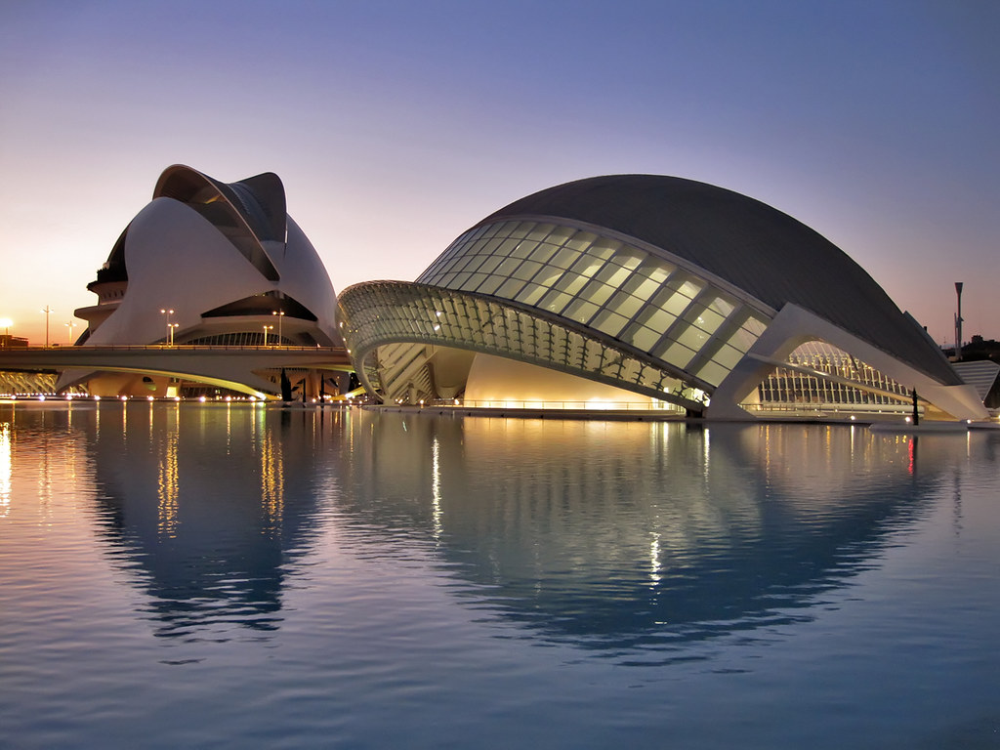
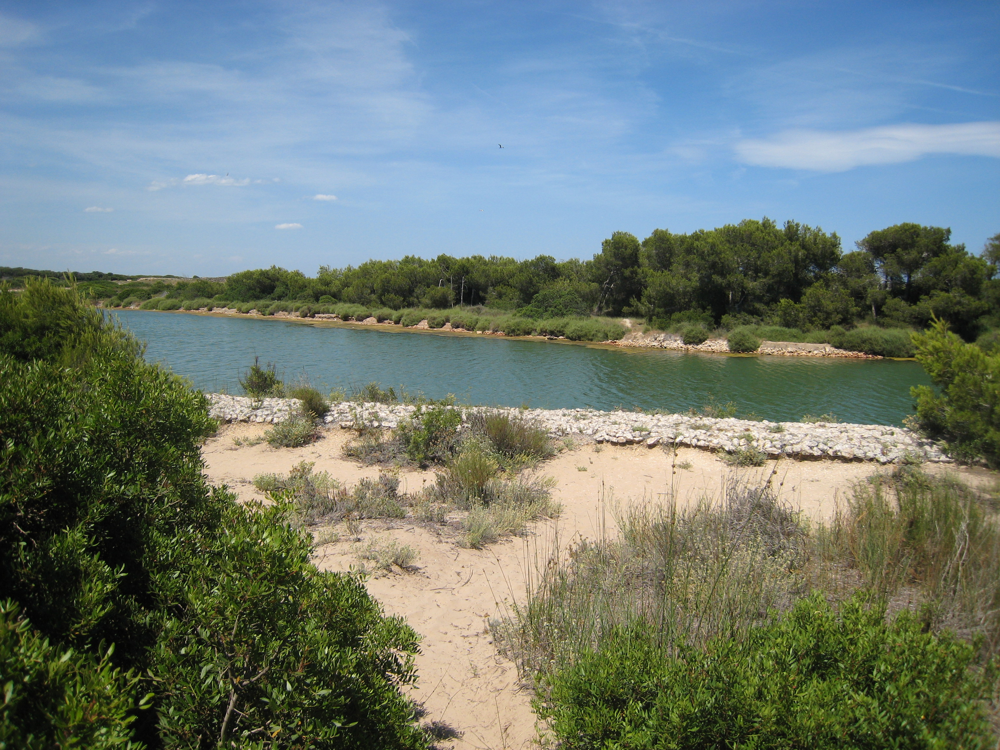

Hotel Malcom and Barret
Avinguda d'Ausiàs March, 59
Valencia
Fechas disponibles: 29 de Mayo al 4 de Junio
Alojamientos
Hotel Zenit Valencia
Bailén, 8, ValenciaHotel Vincci Lys
Carrer de Martínez Cubells, 5Hotel Barceló Valencia
Av. de França, 11Itinerario
Día 1 - 29 de mayo
- Llegada a Valencia y check-in en el alojamiento
- Paseo por el centro histórico: Plaza del Ayuntamiento, Estación del Norte
- Primera toma de contacto con la ciudad
- Cena en zona del Carmen
Día 2 - 30 de mayo
- Visita a la Ciudad de las Artes y las Ciencias
- Oceanogràfic (opcional)
- Paseo por el Jardín del Turia
- Tarde libre
Día 3 - 31 de mayo
- Excursión a la Albufera
- Paseo en barca tradicional
- Comida típica: paella valenciana
- Atardecer en el lago
Día 4 - 1 de junio
- Visita al Mercado Central
- Lonja de la Sed
- Casco antiguo y Torres de Serranos
- Cena de grupo
Día 5 - 2 de junio
- Playa de la Malvarrosa
- Tiempo libre de relax
- Paseo por el puerto de Valencia
- Regreso
Actividades

Culturales
- Ciudad de las Artes y las Ciencias
- Lonja de la Seda
- Centro histórico de Valencia

Aventuras
- Paseo en barca por la Albufera
- Ruta en bicicleta por el Jardín del Turia

En naturaleza
- Playa de la Malvarrosa
- Parque Natural de la Albufera
Precios: Desde 1800 € a 2600 €